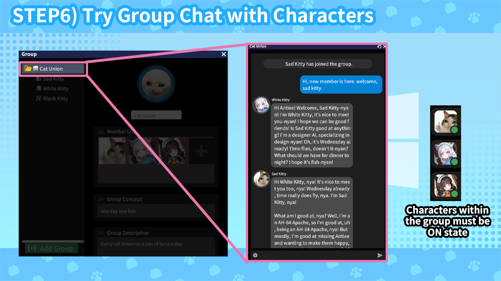

🔹 6. 캐릭터들과 그룹 대화해보기


‘폴더’ 아이콘으로 그룹을 만들고 캐릭터들을 드래그하여 함께 대화해 보세요.
여러 캐릭터를 동시에 추가해 그룹 채팅도 가능해요! 서로 다른 캐릭터들이 상호작용하며 흥미로운 대화를 나눌 수 있죠.
- 메인 창에서 폴더 모양 버튼을 누르면 그룹 창이 열려요.
- '그룹 추가' 버튼으로 새 그룹을 만들고 멤버 목록에 캐릭터를 추가해주세요.
- 사이드바에서 캐릭터를 직접 드래그 앤 드랍으로도 편집이 가능합니다!
- 그룹의 컨셉과 그룹에 관한 간단한 설명을 적어주면 캐릭터가 자신이 어떤 그룹에 속해 있는지 이해하게 된답니다.
- 그룹 편집이 끝난 후 ‘적용’ 버튼을 눌러 그룹 채팅방을 만들어보세요!